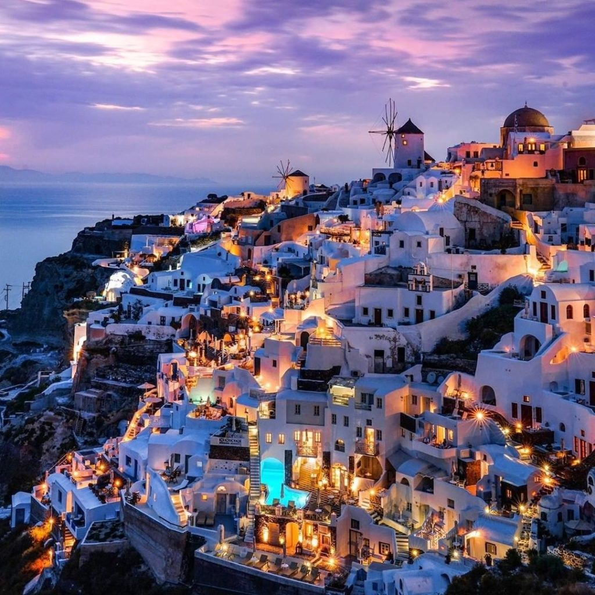
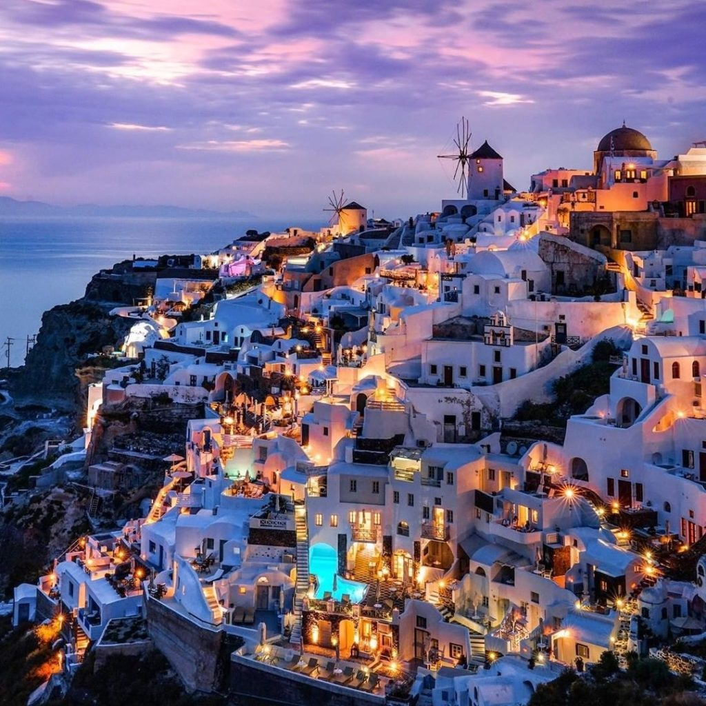

Santorini, une ville pleine de surprise pour des vacances inoubliables !

 


La Grèce attire les voyageurs du monde entier, et une île en particulier semble avoir été choisie par mer nature pour combler tous les amateurs de voyages en quête de paysages inoubliables ! Santorin est une île qui est faite pour vous! Que vous soyez entre amis, en couple ou encore avec votre famille, la magnifique Île de Santorini en a comblée plus d'un ! Une ville sauvage mais aussi dynamiques. Santorin est considérée comme l’une des plus belles destinations par les amoureux du monde entier. Santorin et ses coupoles bleues, Santorin et ses paysages à couper le souffle, Santorin et son ambiance…